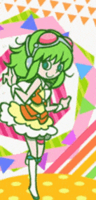
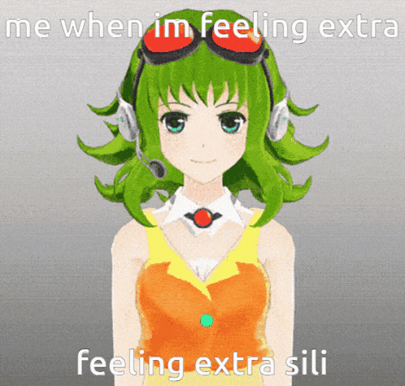
listen!
dearest gumi <3
i heard 'Amanojaku' for the first time when i was watching a video on SDVX and i loved the song so much, so then i was like okay what vocaloid is blessing my ears right now, i have never heard her voice whats going on??? and THEN i found gumi... i was so happy instantly my fav vocal synth EVER (that says a lot cuz im day one teto fan)
gumi's voicebank is also how i discovered siinamota's "alive" album. which is still one of my all time favorite vocaloid productions like ever. seriously good music, rest in peace siinamota.
there will never be enough gumi support in the world. more people need to listen to her :3 best vocaloid 4ever
-LOOK AT HER

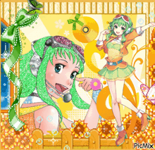
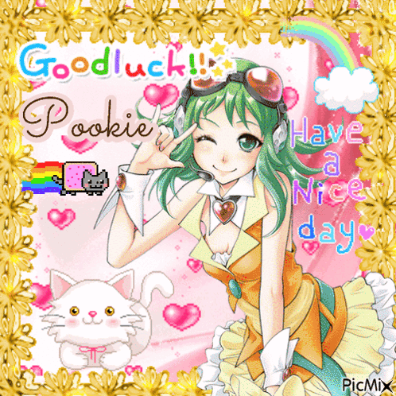
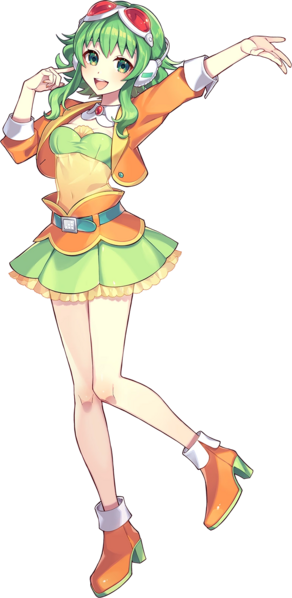
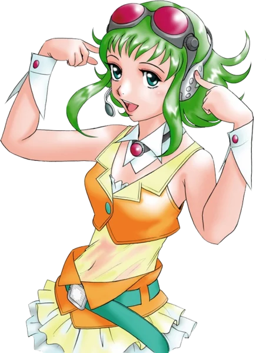
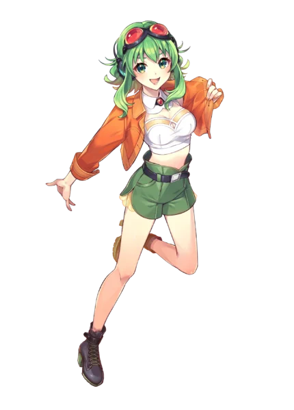
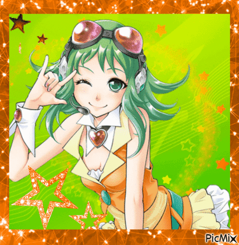
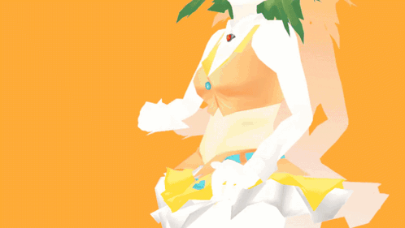
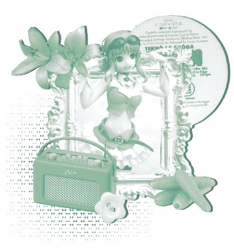
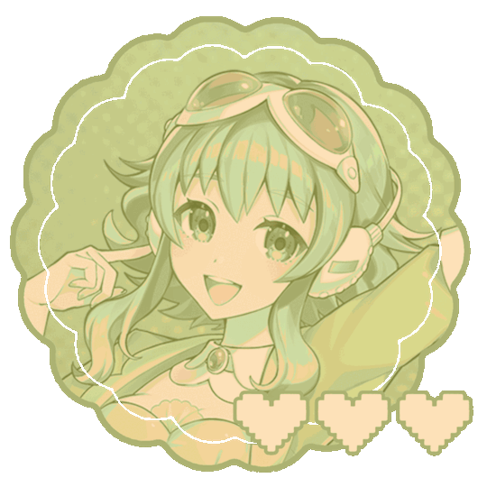
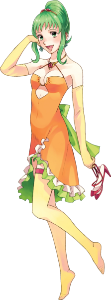
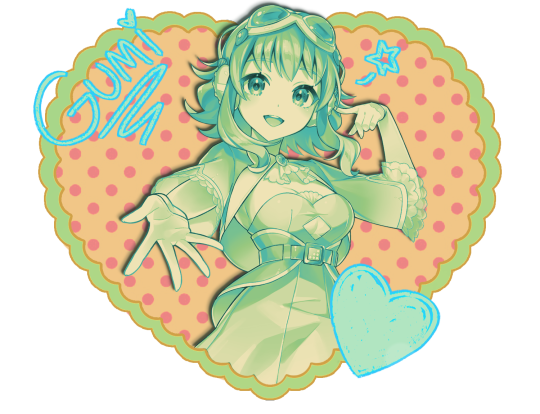
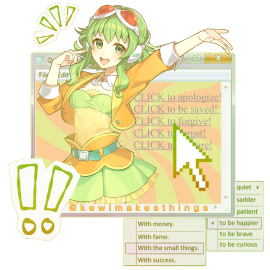
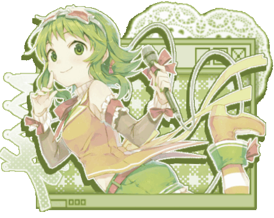
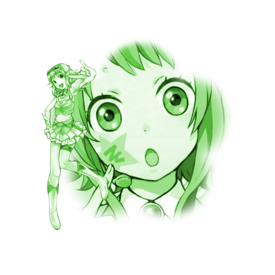
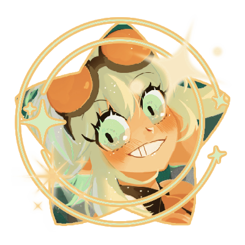